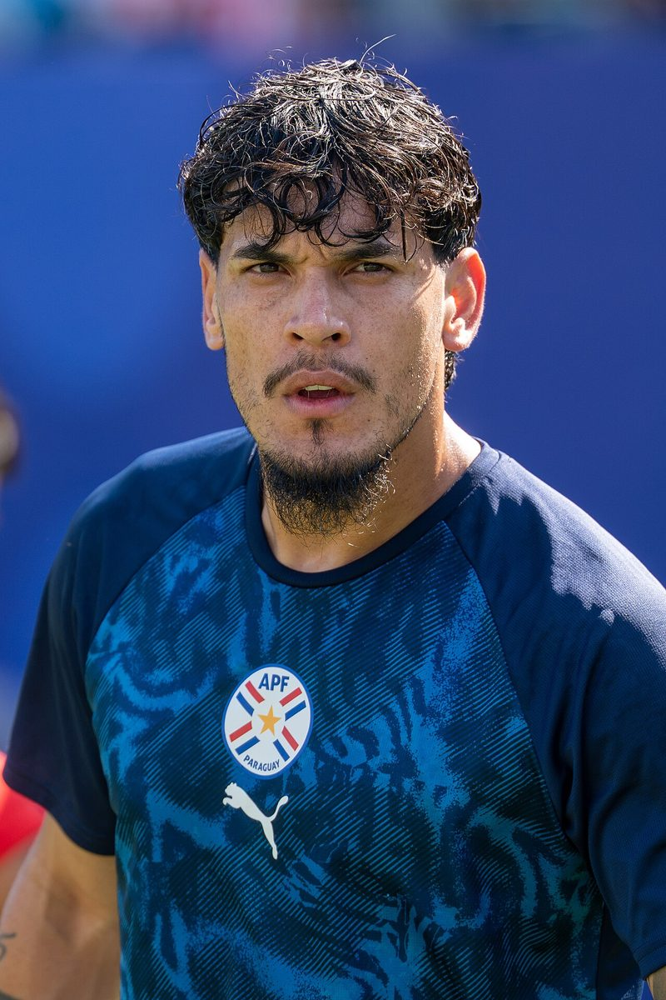

Paraguay Spoil Moriyasu's Farewell as Japan Lose 2-1 in Singapore
Juan José Cáceres and Gustavo Gómez scored for Paraguay at the National Stadium, and Shio Fukuda's late header was not enough in Hajime Moriyasu's 113th and last match in charge of Japan.

What happened
Japan lost 2-1 to Paraguay in a friendly at the National Stadium in Singapore on Tuesday 17 November 2026, in Hajime Moriyasu's last match as Japan coach. The game was part of the Kallang Football Series.
Paraguay scored in the second minute. Juan José Cáceres finished from the edge of the box after a pass from Diego Gómez, the Indonesian news agency ANTARA reported. Japan had a penalty ruled out after a video review in the 35th minute, and Paraguay captain Gustavo Gómez headed in a Diego Gómez set piece in the 40th minute to make it 2-0.

Moriyasu sent on attacking players including Takefusa Kubo and Takumi Minamino in the second half. In the 85th minute, Paraguay goalkeeper Orlando Gill parried a Kubo free kick, and substitute Shio Fukuda headed in the rebound. Japan could not find an equaliser.
Moriyasu's farewell
Moriyasu, 58, took charge of Japan in 2018. He leaves after 113 matches, with 77 wins, 17 draws and 19 defeats, a win rate of 68.1%, Star News reported. Three days earlier, his team had beaten Brazil 3-2.
After the match he received a bouquet and a Japan shirt with the number 113. He said he believed Japan "will surely reach the pinnacle of world football", thanked supporters, and said his team had not played shrewdly enough. He added that heavy rain had forced the cancellation of training before the game. He said he had no formal job offers yet.

What happens next
The Japan Football Association named Go Oiwa, coach of Japan's under-21 team, as Moriyasu's successor in July, Reuters and Jiji Press reported. Oiwa had originally been due to take over after the 2027 Asian Cup in Saudi Arabia. According to Star News, that tournament has been postponed by about a year, and a friendly planned for late December has been cancelled.